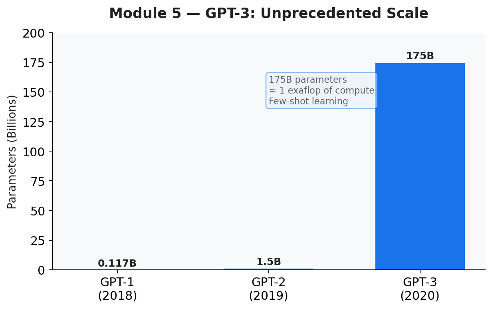
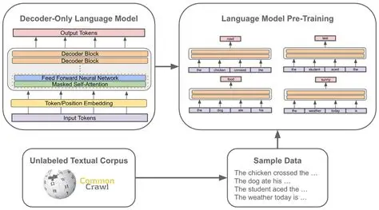

| Assignment Type | Assignment — Research Essay |
|---|---|
| Topic | Generative Pre-trained Transformer 3 (GPT-3) by OpenAI |
| Date Submitted | 1 March 2026 |
Generative Pre-trained Transformer 3 (GPT-3) is a large language model developed by OpenAI that represents a major milestone in the advancement of artificial intelligence. GPT-3 was designed to improve how machines understand and generate human language, with the broader goal of using artificial intelligence to benefit humanity. It is currently used to support design, content creation, story writing, coding, and data analysis, allowing users to complete complex tasks more efficiently by interacting with the system using natural language (Raiz, 2020).
One of the most significant features of GPT-3 is its task-agnostic design and few-shot learning capability. Unlike earlier AI models that required extensive retraining for each new task, GPT-3 can perform new language tasks with minimal instruction or a small number of examples (Brown et al., 2020). This flexibility has made it especially valuable for developers, designers, and writers who need rapid prototyping and adaptable solutions.
The success of GPT-3 is closely tied to its unprecedented scale. The model was trained with 175 billion parameters — more than ten times larger than previous language models (Brown et al., 2020). Training required approximately one exaflop of computing power (one thousand petaflops), a level of compute that played a critical role in enabling GPT-3’s advanced language capabilities.


Despite its advantages, GPT-3 also presents significant challenges. Because the model is trained on large datasets of human-generated text, it can reproduce biased or toxic language. Brown et al. note that potential harms include misinformation, spam, phishing, fraudulent academic writing, and social engineering. These risks highlight the importance of responsible AI development and ongoing fine-tuning.
| Assignment Type | Puzzle — Critical Analysis |
|---|---|
| Topic | Comparing photographs, paintings, and AI-generated imagery |
| Date Submitted | 1 March 2026 |
This puzzle explored the blurring line between photographs, paintings, and AI-generated images through the work of photorealist painter Richard Estes. His paintings closely resemble photographs but are entirely hand-painted, constructed through careful observation and reference photographs. The comparison highlights how AI-generated images can replicate visual qualities of photographic realism, though they differ in the degree of human labor, the tools used, and the context in which the image is presented.
Malcolm Ryder argues that different visual media can satisfy the same aesthetic selection standards, even though they are produced through fundamentally different processes (Ryder). Most AI-generated images today are created using text-to-image diffusion models, which transform written prompts into visuals by gradually refining random noise into detailed images.
GPT-3’s scale and few-shot learning capability marked a genuine turning point in AI, making language models practical tools for everyday creative and technical tasks. The ethical challenges it raises — bias, misinformation, academic fraud — are not hypothetical; they are already happening and demand responsible governance.
The visual authenticity puzzle taught me that the line between human-created and AI-generated content is increasingly blurred, raising important questions about authenticity, labor, and value in creative work. If a painting and an AI image produce the same emotional response, what determines which is more “valuable”? That question stayed with me long after the assignment was submitted.
Brown, Tom B., et al. “Language Models Are Few-Shot Learners.” arXiv, 2020.
Raiz, Greg. “GPT-3 Applications.” 2020.
Merritt, Rick, and Merritt. “What Is a FLOP?” NVIDIA Blog, 2022.
Stamberg, Susan. “Richard Estes: Painting Reality Better Than a Photograph.” NPR, 2014.
Ryder, Malcolm. “Visual Authenticity in the Age of Image Generation.”